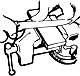

Tool Sharpening Basics
November/December 1987
MOTHER'S HANDBOOK
Let's cut the mystery away from this vital skill.
By Pat Stone
Coaxing an edge onto a trusted tool can be a peace-bringing and fulfilling process.
I've been a tool sharpener for so long my pocketknife blade can trim a tick's toenails. My kitchen knives can slice a potato too thin to taste. And long ago I stopped performing the so-called expert's trick of shaving my beard with an ax. No sir, I use that tool's edge to floss between my teeth!
None of the above boasts are a bit true. Actually, I've always found tool sharpening to be very intimidating, partly because everybody else seemed to be an expert at it. Still, I knew it was an important skill to master. You simply can't do many jobs with dull tools, and you can perform any cutting task much better and more easily with a sharp one.
I finally decided it was time for me to get a handle on the subject. So I visited local tool sharpeners Roger Korning (who uses sophisticated Foley Belsaw machinery) and Collier Davis (a file-and-grindstone man). I got a two hour personal honing lesson from professional knifemaker Robert Parrish, who's famed among the gun and-blade set for his exquisite RP survival knives. I collected tips from Hollen Orr, a retired craftsman who's built a grandfather's clock and a set of violins by hand. I spent hours in the shop with MOTHER'S own workshop wizard, Dennis Burkholder. I even called up public TV's renowned woodwright, Roy Underhill, for advice!
The result? I'm not ready to trim my face fuzz with an ax, but I can now put a decent working edge on most of the tools my family uses. And here's betting I can tell other novice edge-keeners how to do so, as well.
"Do the job right, and you'll get a good edge in five minutes."
The pros know a dull tool is more dangerous than a sharp one.
Rough Work With a File
Let's divvy up the doings right off into two groups-rough outdoor tools you can sharpen well enough with a file, and finer blades that need more specialized care. We'll start with the file jobs because they take less skill (if more muscle), yet illustrate many of the principles of fine-tool sharpening. In fact, let's get right to work by discussing tools many people have never even thought about sharpening- spades and shovels .
You won't believe it until you try it, but a sharp spade (the flat-faced digging tool) or shovel (the curve-faced one) will cut through dirt far easier than will a dull one. All you need for the job is a coarse hand file. (Hollen Orr says, "Use a file on everything it'll cut. With a file you can see where you've been.") It can be either single-cut (one set of lines-actually, rows of teeth) or double-cut (two intersecting sets of teeth). The double-cut will take more metal off with less effort; the single-cut will do a finer job.
But before you get to filing, let's look at your digging tool a second. Is it rusted? Not good. As MOTHER'S Dennis Burkholder puts it, "The only thing that'll ruin the edge on a tool faster than using it is abusing it. And nothing'll pit up an edge faster than rust." So scrape off as much rust as you can with steel wool, and from now on clean off this (and every) tool after you use it, and rub it lightly with oil to keep new rust from forming. This simple step will greatly extend the edges and lives of your tools.
Now for the real work. First, run your file around the top of the edge some, if need be, to smooth out any nicks in the blade (Fig. 1). Then consider: A shovel or spade is a single-beveled tool. It has only one sharp edge, which leads us to: Sharpening Axiom No. 1: Sharpen single-beveled tools ONLY on the beveled side (Fig. 2). You can ruin the cutting edge of the tool otherwise. In real life, you could probably rescue a rough tool like a shovel from the mistreatment of having both sides filed.
But do that to your scissors or prized pruners, and they'll be headed for the junk pile. So brace your spade or shovel well-this and, almost every sharpening job will go easier if you clamp your work with C-clamps or in a vise-and file it on the top, the beveled side. (Keep your forgers out of the way.) You can run your file up into the blade or down the blade, whichever's easier. Use a file that matches the contour of the blade: a flat one for that flat-faced spade and a half-round one for the curved shovel.
What kind of angle should you sharpen at? Ah, that takes us right to: Sharpening Axiom No. 2: In general, sharpen the bevel at the same angle that was already there. In other words, if you can tell what angle the manufacturer or prior sharpener used, follow it.
If you can't tell, move on to: Sharpening Axiom No. 3: Sharpening at a steep angle gives a more durable edge; sharpening at a low angle gives a sharper edge (Fig. 3). The thin edge produced by low angle sharpening will obviously be sharper than a wider edge, but it will be more brittle as well. Since we're honing a digging tool that's likely to strike roots or rocks, a tough edge is probably more important than a super sharp one, so sharpen your spade at a fairly-high angle say, one that puts a shine back only about 1/4 inch into the blade. Press the file hard on your forward stroke, going the full length of the sharpening tool (so you won't wear the file out in one spot). Your backstroke should be light, little more than the weight of the tool, to keep from breaking any file teeth.
And angle the file across the blade face as you push rather than going straight into the blade (Fig. 4). That'll help you sharpen the edge evenly. It may also help you run the file teeth at a more effective right angle to your work. (Does that sound cuckoo? Look at the lines of file teeth. If they run at an angle, working the file across can help run those teeth right into the work.) Sharpener Collier Davis dips his file in water frequently as he works, to wash off the shavings, and says that this lengthens the life and increases the bite of the tool. Eventually, though, any file will wear out. When yours doesn't work well anymore, and unclogging it with a wire brush won't fix it, replace it. Once you've run the file across the entire blade a while, you'll have created a shiny tapered edge. If you run a finger on the underside of the blade, from the inside out to the tip, you may be able to feel a slight burr (also called a wire or feather ) at the edge. That's the best sign that things are getting sharp.
The burr is created when the edge gets so thin it won't stand the pressure of the file, so it bends over to the other side (Fig. 5). It's so small you can't see it. And it may be hard to feel, almost like running your hand over a piece of transparent tape. (If you have trouble, try drawing your fingernail at a 45° angle toward the burr.) Keep filing until you can feel that burr-all the way along the edge. It's critical to good sharpening. Besides, getting a sense of this large, relatively easy-to-sense burr will help you know what to feel for on the finer tools we'll cover later. Now all that's left is to remove this fragile feather. To do so, lightly run your file flush with the unbeveled surface of the spade. I know, I told you not to sharpen that side.
You're not, because you're not filing into the blade at an angle, just filing along it. You might then want to turn the shovel over and lightly file into your first side again to remove any burr that got pushed back over to it, and you'll be ready to dig like the dickens. OK, that job was easy enough. Let's move on to another commonly used but rarely sharpened tool-the garden hoe Again, you simply won't believe how much better that weed chopper will work once it's got a good edge on it. And why make weeding any more work than it is already? Use the same techniques described above: Your hoe (plain or fancy) has a single-bevel cutting edge, so you're going to sharpen only that one side. If you can't tell by looking, the cutting edge is at the bottom of the tool, running right along the ground when you're using the hoe. (A hoe's flat upper edge pushes dirt out of the way while its bottom face cuts roots.) Sharpen the beveled side well with your file. At what angle do you sharpen? Follow the existing angle or try Dennis Burkholder's old-timey trick: Scrape the tool along some cement, standing just like you were using it to weed (Fig. 6). Then sharpen where you see scratch marks. That way you'll be setting the cutting edge at the perfect angle to suit your height and posture.
File until you've drawn out a burr. Then trim that wire off the other side, and give the first side a couple of extra light licks. And from now on, whenever your garden weeds start to feel a bit stubborn (which may happen a couple of times a day), take a short break and give your hoe a quick keening. You'll save time and energy.
Your lawn mower blade, more of the same. Disconnect the spark plug (just in case the cantankerous thing gets any ideas), then unbolt the blade and clamp it in a vise. Tip: If you set it (and other tools) so you can look "into" the end of the blade, you can better see if you're maintaining the proper angle. File the cutting side only, creating a shiny bevel about 1/8 inch or so wide (Fig. 7). You may want to use a half-round file in the bowed portion of the blade. Sharpen both ends of the blade to match, using the single-bevel techniques already described. All done? Whoa, don't put the blade back on yet.
First make sure it's balanced end to end. Set the center of the clean (no grass on it) blade on the corner of your file and see if both sides weigh the same (Fig. 8). (The center should be at the middle of the main hole. You can measure in from both ends to make sure.) If one side sinks, file a little bit off the back edge of that heavy side, and balance it again. Don't neglect this step: Dennis Burkholder (who once helped design mowers) says it's just as important as sharpening the blade. Otherwise, your blade may wobble when it spins, and that 3,600 rpm shimmy will eventually wear out the oil seals on the blade's shaft. You'll find yourself with a strange-and expensive-problem to fix: "Whenever the motor of my mower warms up, oil runs out the bottom.
" Once the blade is nicely sharp and balanced, put it back on the mower-cutting edge up. (That position, coupled with the airplane like lift created by the up-curve in back of the blade, helps keep cut grass up off the ground so it can be blown out. By the way, if you put the blade on upside down, you'll be surprised by how poorly it cuts-I sure was!)
Pruning shears? Grass clippers? Tin snips? You can file them into shape, no problem. Remember, they're single-beveled tools.
So if you mess with the insides of those closing blades (except to lightly remove burrs), don't blame me for what happens. Actually, if your pruning shears aren't cutting well, it may be that there's too much play between the blades. Tighten the nut in the middle and see if that helps. Heck, you can even sharpen one of those jagged-edge hand
swing blades (also called grass whips) with a file. Run it down the bottom cutting side and it'll get both the peaks and valleys of the blade (Fig. 9). OK, it's time to move on to a more labor-demanding subject: the
ax . To sharpen most dull axes, you're going to have to file back a shine on each side 3/8- to 1/2-inch long, and that means removing a lot of material. Woodwright Roy Underhill uses a single- or double cut file for this job, drawing the file back and forth along the side of the blade with both hands (Fig. 10). He says this technique makes it easier to keep an accurate angle while you work, keeps you from accidentally pushing your hand into the blade and leaves a smoother finish. Some other sharpeners I met feel that a dull ax requires so much filing that this is one time a power grinding wheel is a big help. If you do use a wheel, for Pete's sake, be careful. It takes off material awfully quickly, and as Collier Davis notes, "You can't put it back on.
" Then, too, if you let any part of your tool get too hot from rubbing against the wheel, its temper will be ruined forever. (Whenever the tool starts to get hot, dunk it in a bucket of water.) So go slow-the slower the wheel, the better. In fact, a hand-cranked sandstone wheel like Roy Underhill uses would be ideal. And follow these safety rules: Wear protective goggles with a power wheel. Hold the ax so it can't possibly jam or get snapped back at you. And keep your hands away from that wheel.
First off, file around the edge or carefully hold the ax edge itself straight into the wheel, perpendicular, and run that edge tip to tip to wear out any nicks. Then grind or file all along one side (Fig. 11), holding the ax so that 3/a inch or a hair more of the side is getting worn. (Tip: If your wheel has a front guard plate, you can tilt it to the correct angle and rest your ax on that improvised guide.) You don't want to grind too far back, or you'll make the tip too thin. An ax blade needs to be a bit thick-more so than a hoe or spade, for instance-so that it won't get stuck in the wood you're chopping. Raise a burr all along the edge, flip the ax over, and grind or file away until you raise a burr on the other side. That's it for the rough work. To really finish the job, you'll need a good honing stone-Carborundum, Arkansas, Washite, whatever (I'll talk more about them soon). You can hold the ax and rub it with the stone like the old-time woodsmen do, but that's a tough trick, because you're trying to keep a precise angle while working freehand with both objects. It's much easier to vise or clamp either the stone or ax in place. Then draw one object across the other so that the stone cuts into the blade. The key here is to keep the entire edge at the same angle, and on both sides. It's not easy. Fortunately, an ax is a hard, rough-work tool, so as long as you're going to chop wood instead of whiskers, you can get away with some beginner's wobbling.
It'll be good practice for knife sharpening and, more important, you'll be smoothing out those ground sides and closing up pores where rust could work in. (For the same reason, using a stone to finish any of the tools we've sharpened so far is probably a good idea.)
The Art of Sharpening a Knife
OK, let's put the file and outdoor tools away and come inside to learn some refined sharpening skills-most especially, putting a good edge on a knife. I'm afraid that job won't be as easy to describe as the others; as professional knifemaker Robert Parrish puts it, "There's lots of controversy over knife sharpening, lots of ways to do it." Roy Underhill concurs, noting that "many people are into the sharper-than-thou thing, saying everything
has to be done the right way-theirs." (Parrish doesn't think much of disputes over techniques: "Basically, they all work.")
For an example of these hones of contention, consider: Should you oil or water a sharpening stone? Underhill feels it helps the stones stay soft and keeps them from getting "glazed"-gummed up with metal shavings.
(He even quotes the Trevisa, a thirteenth-century medieval encyclopedia that recommends ". . . diverse maner of whetsones, and some neden water and some neden oyl for to whette.") Parrish doesn't lubricate his stones, though. Neither does John Juranitch. John What? Who's he? He's the guy who wrote the best book we know on this topic, The Razor Edge Book of Sharpening . He holds the world record for rapidly sharpening a dull ax and shaving his beard with it. He's made a business of helping thousands of butchers and packing houses improve their cutting edges.
And he's studied dry- and wet-honed edges under 10,000-power electron microscopes. He says oiling a stone just creates an abrasive grinding compound on top of the stone that can actually dull a blade. Me? I figure if an expert like that doesn't go for oiling, that's a good enough excuse for a beginner like me to take the easy way out and not do it either.
Another big dispute I've run into is double-edging. Juranitch says to put a low secondary , or relief, angle on the sides of the blade with a coarse hone and then put a steeper primary edge on just the tip of the blade (Fig.12). However, none of the people I talked with consistently do this. (Underhill: "Someone who looked in my tool chest would find tools sharpened all sorts of ways; I do what it takes to make a tool work.") Since this is a beginner's article, I'll just go into the more common single-edge sharpening here.
If you want to move onto double-edging after you master basic sharpening, read Juranitch's book. Feud number three: What kind of sharpening stone should you use? Parrish likes Carborundum; my editor swears by his Japanese water stones; Underhill likes Washita or even Belgium white clay pieces he finds at the junk dealers. Best as I can figure, it doesn't much matter. What is important is that you have two abrasive surfaces: a coarse one to get the hard grinding done faster and a fine one for the finish sharpening. A coarse stone wears material away quickly until the blade angle is what you want it to be, but if you continue to use it past that point, it'll take off your sharp edge rather than finish it. The fine one gives you that final keen, smooth edge.
If you want to use natural stones for these jobs, remember that a soft stone is more abrasive than a hard one. (The fine, glasslike surface on a hard stone is for finishing.) Seems to me, the easiest thing to do is drop by your local hardware store and get a two-sided (one rough, one smooth) Carborundum stone. They work swell. What ever stone you use, do get a big one, at least six inches long, so you'll have enough room to do a full sharpening stroke. (A seven-inch Carborundum runs around $12 in our area.) A couple more things and we'll be ready to begin. One, fasten your stone in a vise or clamp, secure it within a small wooden frame-do something so it won't move around.
You'll have enough trouble getting a consistent sharpening angle with only the blade moving. Don't make things worse by letting the stone wiggle around as well. Two, for your first practice sessions, get hold of an inexpensive high-carbon knife. They wear away a lot more easily than your stainless steel Swiss Army or kitchen butchering knife, so you can see results (good and bad) a whole lot faster. (Besides, with one of those you won't mess up a really good knife while you're learning.) I practiced on a flea market set of kitchen knives. Enough preamble.
Fasten your rough stone in place. Hold your knife with two hands, one hand on the handle and the other supporting the blade (thumb on the blunt back edge). Hold the blade at a slight-not steep-angle (the magic number is 20°, but who's measuring?), and push the blade along the stone as if you were trying to cut a slice out of its surface (Fig. 13). Sound easy? It's not.
You want to sharpen the whole edge of the blade with every stroke, so you've got to move the blade diagonally as you push it forward so its tip will make contact with the stone before you reach the end of the stroke (Fig. 14)-that's why you want a good-sized honing stone. You'll also have to lift up on the handle of the blade a bit as you get to the tip, or that curved edge won't really meet the stone (Fig. 15). And-most important of all-you've got to keep the same angle on the blade with each and every stroke. That's the real problem.
Listen to Robert Parrish: "It'll take an hour for the average person to sharpen a pocketknife-and it still won't be really sharp. Do the job right and you'll get a good edge in five minutes. Ninety-nine percent of the problem is in the angle." If you keep changing the angle as you work (ever so slightly, ever so unintentionally), you'll keep hitting edge to stone at different points and, in effect, rounding off the edge of the blade, making it dull instead of sharp. It sure happened to me.
Parrish gave me a good one-on-one lesson, went off to help a customer, came back and found I'd made my pocketknife duller instead of sharper. I figured R.P. had more important things to do than watch me mess up, so I went home to do what he (and all the other experts I talked to) emphasized: Practice. (It helped.) Some other tips: Hold that thumb backstop on the blade so the side of it touches the stone while the middle of it holds the blade at the angle you want. Sharpen by pivoting your body at the waist so you'll have your wrists and elbows locked. And you can, if you'd rather, do your rough honing by moving sections of the blade round and round in a circular motion. Underhill figures that makes it easier to keep the correct angle because you're not repeatedly lifting the blade off the stone.
If you're getting frustrated or just want to make the whole job go a lot easier, get a sharpening guide-a little blade clamp that automatically holds your knife at the right angle (Fig. 16). Buck Knives makes one, called the Honemaster, and Juranitch offers the Razor Edge Knife Sharpening Guide. Let me tell you, unlike many sharpening gimmicks, these two doodads work. You may just want to use them as training wheels, but beard-axer Juranitch claims no expert can "freehand" a knife edge as well as an amateur with a guide can.
He's even proved it repeatedly by having pairs of novices-his daughters, Boy Scouts, professional outdoor writers-use his guide to sharpen pocketknives and then by shaving his own face with those blades. OK, guided or not, work that one side of the blade until you can raise a burr along the whole edge. Keep working until you get that burr-let it be your teacher. Once you've got a full-length burr, turn the knife over and sharpen the other side by pulling the blade toward you. Your blade hand position will have to change here.
This time put your fingers behind the blade and let your thumb press down on the side (Fig. 17). Everything else is the same. Keep a constant blade angle (the same one you had on the other side), stroke the whole blade on the stone, and lift the handle some as you get to the tip so it will get sharpened too (Fig. 18). Work that side until you raise a full burr going the other way. Now switch to your fine stone for the finish work. Stroke once away from you (as you did at first) and once toward you. Alternate about a dozen strokes, forward and backward, on the stone. Don't press as hard on these strokes as you did on the rough-side ones. And you can keep lightening up so your last few strokes carry just the weight of the knife.
You're done-or are you? How can you tell if your knife is sharp? Well, you can run your thumb over (not down-ow!) the edge and feel if it tends to catch in your thumbprint grooves. You can hold a piece of paper by the corner and see if your knife will- cut (not tear) into it. And you can try to shave hair off the back of your arm with it. If it does all that, congratulations! You've done well. If not, repeat your steps on the fine stone. That'll probably do the trick. If it doesn't, you're most likely not holding the knife at a constant sharpening angle. Keep practicing-or get a sharpening guide. Once you've got a fine edge, you might want to put an extra finishing touch on it by stroking it down a steel or a pair of ceramic sticks. Most of these are set at an angle. All you have to do is hold your blade vertical and run it straight down the stick, drawing the full blade against it as you do.
Regular use of these last aids will help keep a good edge on a blade, but they will not fix a dull one. Put that kind back on the stone. Now you can sharpen all the knives in your home. Most of them will take that same slight angle you put on your first blade. If you're honing a butchering knife that's going to be going through bone, put a steep angle on it so the edge won't be likely to break. If you're keening a delicate-work fillet knife, give it a very slim taper.
Let's move on and sharpen a wood chisel or a plane . Another two-stage job, rough then fine. You can do the rough work with a coarse stone, a file or a grinding wheel (if you're real careful). Remember, the most important thing: This is a single-bevel blade so sharpen it only on the angled side or all is lost. Follow the original bevel unless you're going to be cutting into very hard wood-in which case, you'd want a steeper (tougher) angle. Hollen Orr clamps his chisel in a vise, so that the edge is horizontal, then runs his file down the face of it until he raises a burr (Fig. 19). Note: He uses a fine file for this operation, following the rule that the harder the object, the finer the file. (A fine file's tiny teeth can better reach into the fine pores of a hard object.) He smooths the burr off by rubbing the back side with a fine stone set flat (not at an angle), then touches up the cutting side a bit with the fine stone. When he's done, that chisel will pop the hairs off his arm. If you're not so confident about your own freehand sharpening, you could use Juranitch's knife sharpening guide (but not the Honemaster) on it and be sure you'll maintain a set angle.
Enjoying the Grind In short, simply combine the techniques given here with some serious dedication to practice (you'll know you're practicing enough if people start asking you why there's no hair on your left forearm). Soon you'll be able to sharpen plenty of the tools around your place. And you'll probably do so more often than you'd think, because it gets to be an enjoyable task. I gain a curious sense of peacefulness from putting an edge on a favorite blade or tool.
The slow rhythm of metal stroking on stone is a calming sound, a serviceable sort of music our forefathers knew well. It's one that's well worth your, and my, rediscovering.
Access The Razor Edge Book of Sharpening and Razor Edge Knife Sharpening Guide are available for $12.50 and $9.95, respectively, from Razor Edge Systems, Inc., Box 150, Ely, MN 55731. Add $3 shipping and handling per order. The Honemaster is available for approximately $9 at shops where Buck knives are sold.
|
Fig. 1 Removing nicks |
Fig. 2 A single leveled tool |
Fig. 3 |
|
Fig. 4 File at an angle |
Fig. 5 The burr |
 Fig. 15 |
|
Fig. 7 Filing a lawn, mower blade |
Fig. 8 Balancing a lawn mower blade |
Fig. 9 Filing a swing blade |
|
Fig. 10 Draw=filing an ax |
 Fig. 11 Grinding an ax |
Fig. 12 Double edging |
|
Fig. 13 |
Fig. 14 |
 |
|
Fig. 16 A knife-sharpening guide |
Fig. 17 |
Fig. 18 |
 Fig. 19 Filing a chisel |
|
|